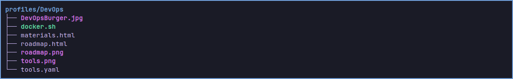
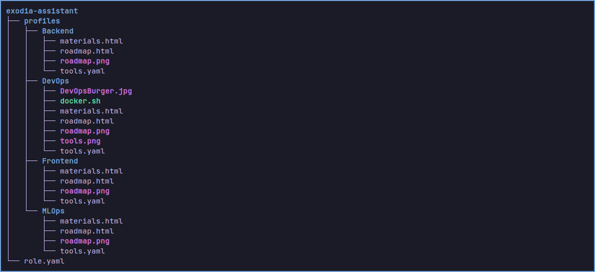

How to Create Your Own Role
Roles in Exodia Assistant are user-selectable profiles that provide custom roadmaps, materials, and environments for different learning or workflow paths (e.g., Backend, DevOps, Frontend, MLOps). You can easily add your own!
-
1.
Create a new folder for your role:
~/.config/exodia-assistant/profiles/YourRoleName/
-
2.
Add a
roadmap.html:
Describe the learning or workflow path for this role. Use headings, lists, and images as needed.
-
3.
Add a
materials.html:
List recommended resources, tutorials, books, or tools for this role. Use links and formatting for clarity.
-
4.
(Optional) Add an
tools.yaml:
Define environment variables, tool lists, or setup instructions in YAML format.
-
5.
Add images or other resources as needed:
Place screenshots, diagrams, or icons in the same folder for use in your HTML files.
-
6.
Test your new role:
Restart Exodia Assistant and select your role from the Roles section. Check that all content displays correctly.
Tips:
- Use clear, concise language in your HTML files.
- Keep file and folder names consistent and descriptive.
- Preview your HTML in a browser for formatting before testing in the app.
- Refer to existing roles (Backend, DevOps, etc.) for examples.
Example Structure Role :

Example Structure Of ~/.config/exodia-assistant :
